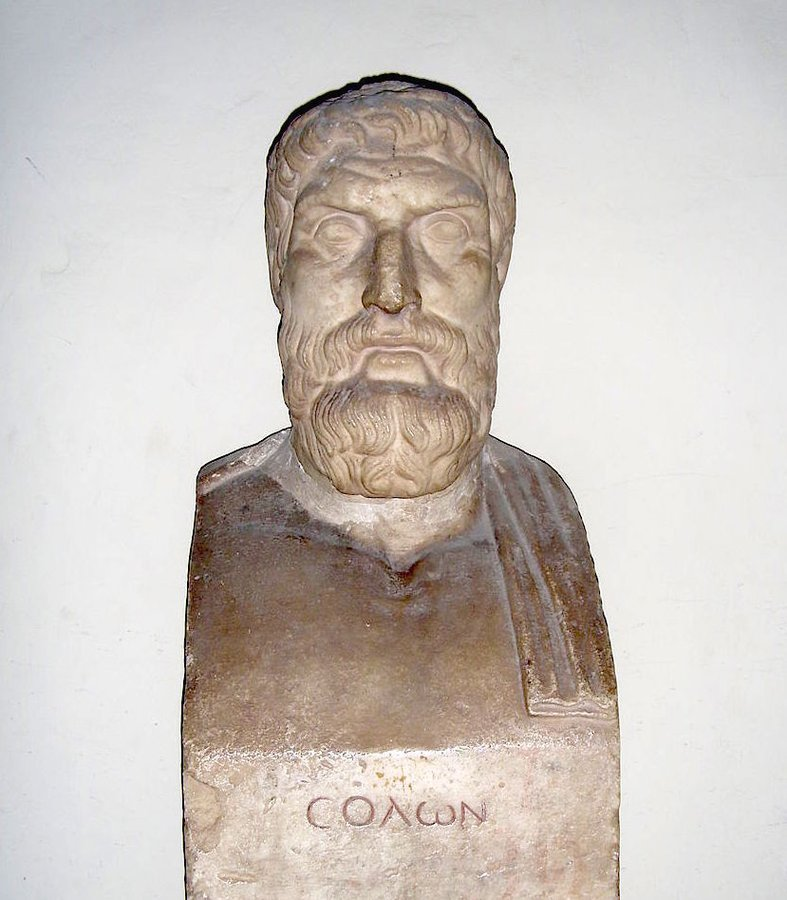
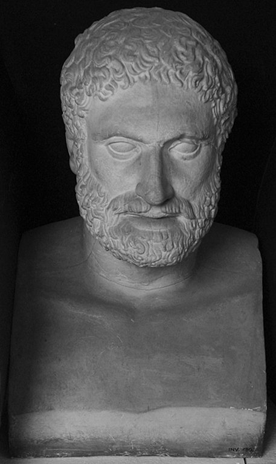
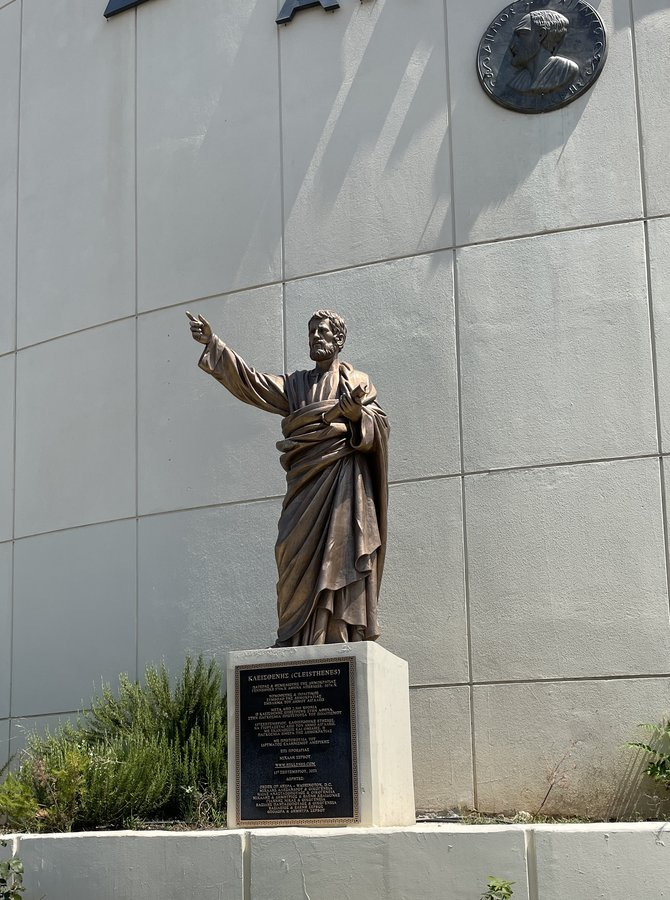

📋 Before this lesson: complete the Module 1 Intro Wrapper in Canvas (ungraded, ~2 minutes, no wrong answers).
A few words worth knowing before you read.
- aristocracy (air-ih-STOK-ruh-see)
- a government, or a ruling class, made up of a small group of noble, “well-born” families.
- democracy (dih-MOK-ruh-see)
- a government in which the people rule themselves, directly or through leaders they choose.
- draconian (druh-KOH-nee-un)
- describes rules or punishments that are much too harsh. The word comes from the lawgiver Draco.
- tyranny (TEER-uh-nee)
- rule by a tyrant; a type of government where one person holds power outside the city's normal system for choosing leaders.
- tyrant (TY-rant)
- in ancient Greece, a ruler who took power outside the city's normal system for choosing leaders. It did not always mean a cruel ruler, the way we use the word today.
A City Ruled by the Well-Born
Long before Rome had its Republic, one small city in Greece tried something new. That city was Athens. In Athens, ordinary citizens did not just obey their rulers. In time, they learned to rule themselves. They used their own votes and their own voices. A famous Roman thinker named Cicero later said the Roman Republic was the best government ever built. But Athens started its own experiment almost two hundred years before Rome got there. Athens tried a bold idea: let the people who live under a government also help run it. Historians call this kind of self-rule democracydih-MOK-ruh-seea government in which the people rule themselves, directly or through leaders they choose.. This experiment did not happen overnight. It took nearly two hundred years of crisis, failed tries, and slow change to build.
In the early 600s BC, a small group of noble families ruled Athens, a kind of government called an aristocracyair-ih-STOK-ruh-seea government, or a ruling class, made up of a small group of noble, “well-born” families.. The Greeks called these families the eupatridaeyoo-PAT-rih-dyethe small group of noble, “well-born” families who ruled early Athens., a word that means “well-born.” These families held almost all the power in the city. Life was much harder for ordinary farmers. If a farmer fell deep into debt, the person he owed money to could legally make him a slave. There was no written law to stop this, because Athens had no written laws at all yet. Whatever the powerful families decided, that became the rule. In 621 BC, a lawgiver named DracoDRAY-kohthe first Athenian lawgiver to write Athens's laws down, in 621 BC. changed part of this problem. Draco wrote down Athens's laws for the very first time. This was an important step forward. When laws are not written down, only the powerful truly know the rules. They can bend the rules to help themselves. A written code took some of that power away. But Draco's punishments were very harsh. He punished even small crimes, like stealing a cabbage, with death. That is why people still use the word “draconiandruh-KOH-nee-undescribes rules or punishments that are much too harsh. The word comes from the lawgiver Draco.” today. It describes rules or punishments that are far too harsh.
- Cleisthenes (KLYSE-thuh-neez)
- an Athenian reformer, active after 510 BC, who created ten new tribes and gave ordinary citizens the right to speak in the Assembly.
- Draco (DRAY-koh)
- the first Athenian lawgiver to write Athens's laws down, in 621 BC.
- eupatridae (yoo-PAT-rih-dye)
- the small group of noble, “well-born” families who ruled early Athens.
- pentacosiomedimni (pen-tuh-koh-see-oh-meh-DIM-nee)
- the richest of Solon's four property classes.
- Pisistratus (py-SIS-truh-tuhs)
- an Athenian nobleman who seized power by force in 546 BC but kept most of Solon's reforms in place.
- seisachtheia (say-sahk-THAY-uh)
- Solon's reform that canceled crushing debts and freed debt slaves; the word means “shaking-off of burdens.”
- Solon (SOH-lon)
- an Athenian lawgiver chosen in 594 BC to rewrite the city's laws and fix its debt crisis.
- thetes (THAY-teez)
- the poorest of Solon's four property classes, owning little or no land.
- zeugetai (zoog-EH-tye)
- the middle class of Solon's four property classes, mostly farmers with a modest amount of land.
Solon's Bargain
The real turning point came in 594 BC. That year, the people of Athens gave huge power to a merchant and poet named SolonSOH-lonan Athenian lawgiver chosen in 594 BC to rewrite the city's laws and fix its debt crisis.. They asked him to rewrite the city's laws and finally solve the debt crisis. Solon acted quickly. He canceled the debts that were crushing ordinary Athenians. He freed citizens who had become debt slaves just for owing money. Solon called this reform the seisachtheiasay-sahk-THAY-uhSolon's reform that canceled crushing debts and freed debt slaves; the word means “shaking-off of burdens.”. This Greek word means “the shaking-off of burdens.” Solon also reorganized Athenian society in a new way. He sorted citizens into four property classes, based on how much land or crops a man owned. At the top were the richest citizens, called the pentacosiomedimnipen-tuh-koh-see-oh-meh-DIM-neethe richest of Solon's four property classes.. At the bottom were the poorest citizens, called the thetesTHAY-teezthe poorest of Solon's four property classes, owning little or no land.. The thetes owned little or no land at all. Solon then connected political office to wealth, not to noble birth. This was a major change. For the first time, a man could hold public office just because he had grown wealthy. His family did not need to be aristocraticair-ih-STOK-ruh-tika government, or a ruling class, made up of a small group of noble, “well-born” families. at all. Solon knew his reforms were not perfect, and he said so plainly. He explained that he had not given Athens the best laws he could imagine. Instead, he gave Athens the best laws the Athenians would actually accept and follow. That is a practical kind of wisdom. It still holds true today: a perfect law that people refuse to obey does nothing at all.

Solon was a merchant, poet, and lawgiver whom Athens gave sweeping power in 594 BC to end a debt crisis tearing the city apart. He canceled crushing debts, freed citizens who had become debt slaves, and sorted Athenians into four property classes so that wealth, not noble birth, opened the door to public office. Solon himself admitted his laws were not the best imaginable, only the best the Athenians would actually accept and obey, a practical honesty that mattered: a perfect law nobody follows accomplishes nothing. His reforms cracked open the aristocracy's hold on power, setting up the crisis that Pisistratus, and later Cleisthenes, would each answer in their own way.
Bust of Solon, Vatican Museums. (Image: Wikimedia Commons, CC BY-SA 3.0.)
Solon's reforms did not end the unrest in Athens. That unrest opened a door for a new kind of leader. In 546 BC, a nobleman named Pisistratuspy-SIS-truh-tuhsan Athenian nobleman who seized power by force in 546 BC but kept most of Solon's reforms in place. seized power by force. The Greeks called a ruler like this a tyrantTY-rantin ancient Greece, a ruler who took power outside the city's normal system for choosing leaders. It did not always mean a cruel ruler, the way we use the word today., and they called this kind of one-man rule tyrannyTEER-uh-neerule by a tyrant; a type of government where one person holds power outside the city's normal system for choosing leaders.. In the original Greek meaning, neither word automatically meant cruel. It simply meant someone who held power outside the city's normal, traditional system. Pisistratus was a tyrant in that specific sense, but he was not necessarily a cruel one. In fact, Pisistratus did not tear down what Solon had built. He governed through Solon's existing property classes and existing offices. He did not replace them with something new. Under Pisistratus, the middle-class farmers, called the zeugetaizoog-EH-tyethe middle class of Solon's four property classes, mostly farmers with a modest amount of land., kept their seats on the Council. The poorest citizens, the thetesTHAY-teezthe poorest of Solon's four property classes, owning little or no land., kept the jury seats that Solon had already given them. Pisistratus's real target was the aristocraticair-ih-STOK-ruh-tika government, or a ruling class, made up of a small group of noble, “well-born” families. families themselves. He worked steadily to weaken their grip on power. At the same time, he carefully kept the system Solon had built. Pisistratus ruled until his death in 527 BC. Then his sons inherited his power. The younger son, Hipparchus, was assassinated in 514 BC. The older son, Hippias, grew harsher and harsher as the years passed. Finally, the Athenians drove him out of the city in 510 BC. Only then did the door open for the reformer this week's discussion is about: Cleisthenes.

Pisistratus was an Athenian nobleman who seized power by force in 546 BC, becoming what the Greeks called a tyrant: a ruler outside the city's normal system, not necessarily a cruel one. Rather than tearing down Solon's reforms, Pisistratus governed through them, keeping the property classes and offices Solon had built while working steadily to weaken the old aristocratic families. He ruled until his death in 527 BC, when his sons inherited power. The younger, Hipparchus, was assassinated in 514 BC; the elder, Hippias, grew harsher until Athenians drove him out in 510 BC. His rule is the hinge between Solon's reforms and Cleisthenes's: a man who took power illegitimately yet preserved what came before him.
19th-century plaster cast of Peisistratos, Statens Museum for Kunst. (Image: Wikimedia Commons, CC0.)
CleisthenesKLYSE-thuh-neezan Athenian reformer, active after 510 BC, who created ten new tribes and gave ordinary citizens the right to speak in the Assembly. did something that neither Solon nor Pisistratus had ever tried. To understand his achievement, you first need to understand what Athens already had. Ordinary Athenians had always held the right to vote in the Assembly, as members of the city's four traditional tribes. That right was never in question. But only aristocrats had ever held the right to actually speak to the Assembly. Only an aristocrat could stand up, propose a new law, or argue against one. Cleisthenes ended that one-sided rule. He gave ordinary citizens the right to speak for themselves in public debate. They no longer had to leave the speaking and the proposing to aristocrats alone. At the same time, Cleisthenes tackled a second, separate problem. Recent immigrants to Athens had never belonged to any of the four traditional tribes. Because of this, they had no path into citizenship at all, since Athenian citizenship itself was defined entirely by tribal membership. Cleisthenes solved both problems with the very same move. He abolished the four old tribes. He replaced them with ten new ones, organized by geography instead of family history. This meant immigrants could now become citizens through their new tribe. It also meant that no single old tribe could work as a private power base for one aristocratic family anymore, since each old tribe had once been controlled by a particular aristocratic clan. Lesson 1.2 and this week's primary sources will show you exactly how Cleisthenes built these new tribes into a working government. You will also see why later thinkers, including the American founders, treated one question as one of the very first any constitution must answer: who counts as a citizen, and on what basis?

Cleisthenes came from the powerful Alcmaeonid family, but his reforms after 510 BC broke, rather than protected, aristocratic power. He abolished Athens's four old tribes, each once controlled by a noble clan, and replaced them with ten new tribes organized by geography instead of ancestry. This let recent immigrants, who had no path into citizenship under the old tribal system, become citizens through their new tribe. Cleisthenes also gave ordinary citizens, not just aristocrats, the right to stand up and speak in the Assembly, ending the aristocracy's one-sided hold on public debate. Historians often call him the founder of Athenian democracy, though the system he built kept changing for two more generations.
Statue of Cleisthenes, Aigaleo City Hall, Greece (2021). (Image: Wikimedia Commons, CC0.)
Notice the shape of this whole story: Solon opens political life to wealth rather than birth, Pisistratus defends that opening even while seizing power himself, and Cleisthenes finally answers a different question entirely, who counts as a citizen at all. Lesson 1.2 picks up with the institutions Cleisthenes built to make that answer real: the Council, the Assembly, and ostracism.